ABSTRACT / 초록
깊은 정지작업에서는 흙의 반력이 계속 바뀌고, 그 부하가 유압 관절의 응답을 바꾼다. 이 연구는 유압 특성을 보정하는 관절 속도 제어기와 관절 지연을 고려하는 모델 예측 제어기(MPC)를 분리해 이 문제를 다룬다.
로드센싱(LS) 방식의 11.5t M445와 네거티브 플로 컨트롤(NFC) 방식의 25t CASE250에 같은 제어 구조를 적용하고, 기체별 약 20분의 보정을 거쳤다. 흙 속 경로 추종 RMSE는 각각 1.4cm와 1.8cm였다. CASE250의 상용 반자동 제어기는 같은 비교에서 4.7cm를 기록했다.
핵심은 실린더 압력으로 부하를 읽어 밸브 명령을 선제적으로 조절하는 피드포워드다. 다만 두 기체가 공유하는 것은 제어 구조이며, 유압 모델의 형태와 보정값은 방식에 맞춰 달라진다.
먼저 읽는 세 가지 발견
유압 방식이 모델을 결정한다. LS에는 명령–속도 1차원 표를, NFC에는 부하를 함께 고려하는 2차원 모델을 사용한다.
정밀도와 부하 대응을 함께 확인했다. CASE250은 RMSE를 약 62% 줄였고, 제안 제어기는 최대 기능 압력에 도달할 때까지 작업을 이어갔다.
경로 오차와 표면 품질은 별개의 근거다. 1.4·1.8cm는 경로 추종 RMSE다. 완성된 표면은 별도의 레이저 스캔 실험으로 비교했다.
같은 밸브 명령이
같은 움직임을 만들지 않는다
공중에서 잘 움직이는 굴착기도 흙을 깊게 밀어내기 시작하면 다른 시스템처럼 반응할 수 있다.
깊은 정지작업에서는 큰 토양 반력이 관절에 작용한다. 역기구학으로 목표 관절 속도를 계산하고 PID로 오차를 줄이는 구조만으로는 부하 변화에 따른 응답 차이를 충분히 흡수하기 어렵다. 여기에 LS·NFC·PFC처럼 서로 다른 유압 방식, 공개되지 않는 제조사 부품 정보가 겹친다.
연구의 질문은 명확하다. 상세 부품 모델이나 수 시간의 기체별 학습 없이, 서로 다른 유압 굴착기에서 깊은 정지작업을 정밀하게 수행할 수 있을까?
| 접근 | 검증 환경 | 보고 성능 | 제약 |
|---|---|---|---|
| 역기구학 + PI Xu, 2014 | 시뮬레이션 | 약 4cm | 단일 기체 모델 |
| 윤곽 제어 + 관측기 Dao, 2021/2022 | 시뮬레이션 | 노트 내 수치 없음 | 실차 검증 없음 |
| 힘 프리로드 + 교차결합 Yang, 2022 | 6t LS 실차 | 얕은 작업 1cm | 기체별 튜닝 |
| 학습 모델 역변환 Lee, 2022 | 실차 | 경로 오차 2cm 미만 | 수 시간의 기체별 데이터 |
| 상용 시스템 Trimble · Cat · Leica | 실차 | 4cm 초과 또는 얕은 작업 | 내부 구현 비공개 |
| 본 연구 | LS·NFC 실차 2대 | RMSE 1.4 / 1.8cm | 약 20분 보정, PFC 미검증 |
연구마다 작업 깊이, 평가 지표, 검증 조건이 다르므로 위 표를 동일 조건의 성능 순위로 해석해서는 안 된다. 이 글의 직접적인 상용 비교는 아래 CASE250 실험을 기준으로 한다.
아래층은 부하를 보정하고,
위층은 지연을 예측한다
제어기는 두 층으로 나뉜다. 위층의 MPC는 버킷이 목표 평면을 따라가도록 관절 속도를 만든다. 아래층은 그 속도를 실제로 구현할 밸브 명령을 계산한다.
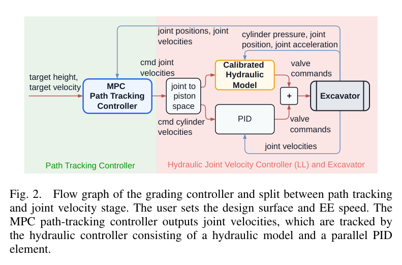
유압 인지 피드포워드: 오차가 생기기 전에 명령을 바꾼다
목표 관절 속도를 먼저 실린더 속도로 바꾼다. 실린더 공간에서 유압 명령과 운동의 관계가 더 선형적이기 때문이다. 보정된 유압 모델은 필요한 밸브 명령을 계산하고, 병렬 PID는 유량 분배·펌프 부스트·회생처럼 모델에 담기지 않은 효과를 보완한다.
부하를 읽는 출발점은 실린더 양쪽의 압력이다. 각 압력에 유효 단면적을 곱한 차이로 실린더 힘을 구한다.
경로 추종 MPC: 관절이 늦게 반응한다는 사실을 모델에 넣는다
MPC는 아래층의 피드포워드·PID·유압·기구를 모두 합친 폐루프 관절 응답을 2차 시스템과 데드타임으로 표현한다. 복잡한 유압 세부 모델은 아래층이 맡고, 위층은 보정 후 관절의 운동 응답을 사용한다.
| 기호 | 의미 |
|---|---|
| vi, ai | 관절 i의 각속도·각가속도 |
| ui | 명령 관절 속도 |
| K, ζ, ωn, τ | 이득·감쇠비·고유진동수·데드타임. 스텝 응답으로 식별한다. |
데드타임은 길이 Nd의 입력 버퍼를 상태에 포함해 다룬다. 시간 간격은 0.1초, 예측 지평선은 20스텝, 제어 주기는 10Hz다. 즉, 설정된 예측 구간은 2초에 해당한다.
비용함수에는 전진 속도 오차, 수직 속도와 피치율의 0 목표, 버킷 피치, 목표 평면과의 높이차, 명령 증분에 대한 벌점이 들어간다. 시험한 속도 범위에서 영향이 작다고 본 관절 간 결합은 모델에서 제외한다.
관절의 지연을 알면, 목표면을 파고들기 전에 명령을 줄일 수 있다.
20분 보정은 무엇을 알아내는가
연구가 제안하는 보정은 기체를 분해하지 않고 수행한다. 관절별로 유압 모델을 만든 뒤 PID를 조정하고, 마지막으로 MPC가 사용할 폐루프 응답을 식별한다.
- 유압 피드포워드 모델명령과 속도의 관계를 측정한다. NFC에서는 부하에 따른 변화도 식별한다.
- 병렬 PID 조정Ziegler–Nichols 방법을 사용해 남은 추종 오차를 보정한다.
- MPC용 관절 모델스텝 응답에서 이득·감쇠·고유진동수·데드타임을 맞춘다.
① LS: 명령과 속도를 연결하는 1차원 표
로드센싱 유압은 부하 변화에 대한 유량의 민감도가 낮다. 연구에서는 정규화 명령 −0.85~0.85를 0.1 간격으로 가하고, 3초째의 평균 실린더 속도를 정상값으로 사용해 명령–속도 표를 만든다.
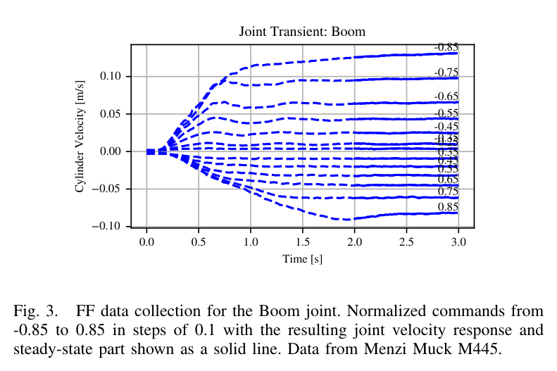
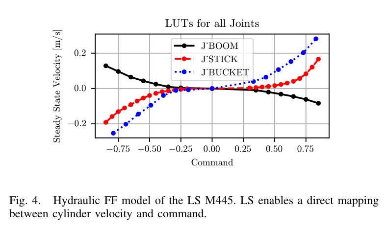
② NFC: 현재 부하까지 포함하는 2차원 모델
NFC에서는 같은 밸브 명령이라도 부하가 커지면 유량이 줄어든다. 따라서 원하는 유량뿐 아니라 현재 부하도 알아야 한다. 여기서 압력 기반 힘 추정이 피드포워드의 입력이 된다.
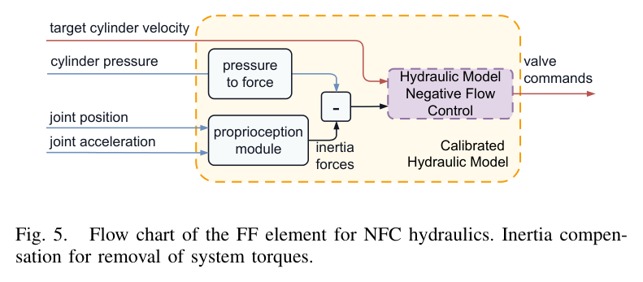
압력이 높아졌다고, 모두 외부 부하가 커진 것은 아니다
밸브를 더 열면 가속이 커지고, 관성에 의해 압력이 상승할 수 있다. 이 상승을 외부 부하로 읽으면 피드포워드가 밸브를 더 열어 양의 되먹임을 만든다. 연구는 Werner 2025의 묶음 모델로 관성력을 추정해 제거한다.
관성 보정 후의 힘을 관절에 대응하는 면적으로 나누어 가상 배압을 정의한다. 이 값은 외력 방향에 따라 음수가 될 수도 있다.
펌프 압력 설정값은 명령 x에 대한 표 Pp(x)로 나타낸다. 방향 제어 밸브의 가변 오리피스 저항은 아래 식으로 모델링하며, 작은 저항값도 적합에서 충분히 반영하도록 로그 오차를 사용한다.
Q는 실린더 속도에 면적을 곱해 구한다. 스틱과 버킷은 일정한 밸브 열림을 유지하면서 버킷을 땅에 밀어 서서히 정지시키는 시험을 사용한다. 이 과정의 가상 배압 증가와 유량 감소 궤적으로 저항을 맞춘다. 붐의 들어 올리는 방향에는 같은 정지 방식을 쓰기 어려워 접힘·펼침·만재의 세 자세에서 데이터를 얻는다.
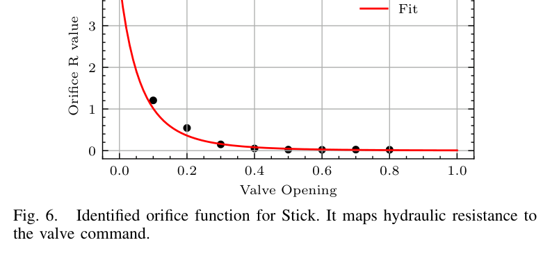
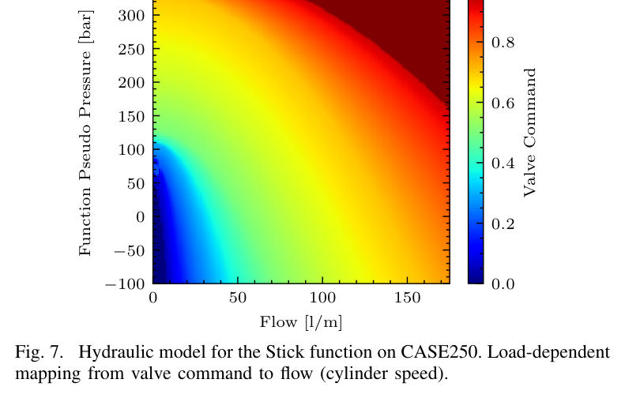
③ 보정된 관절을 다시 측정한다
마지막 단계는 유압 제어가 적용된 상태의 스텝 응답을 측정하는 것이다. MPC는 이 응답에 맞춘 2차 시스템과 데드타임을 사용한다. 아래 예시는 CASE250 붐의 0.05rad/s 명령이다.
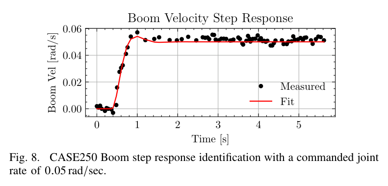
오차는 줄고,
작업은 더 높은 부하까지 이어졌다
근거 A · 피드포워드만으로 부하 변화에 대응하는가
LS 방식의 M445에서는 표 검증으로 관절 속도 추종 오차 약 2%를 보고했다. NFC 방식의 CASE250에서는 PID를 끄고 붐에 0.05rad/s를 명령했다. 빈 버킷·접힘·만재처럼 부하가 다른 조건에서 피드포워드 항이 달라지며 목표 속도를 추종했다.
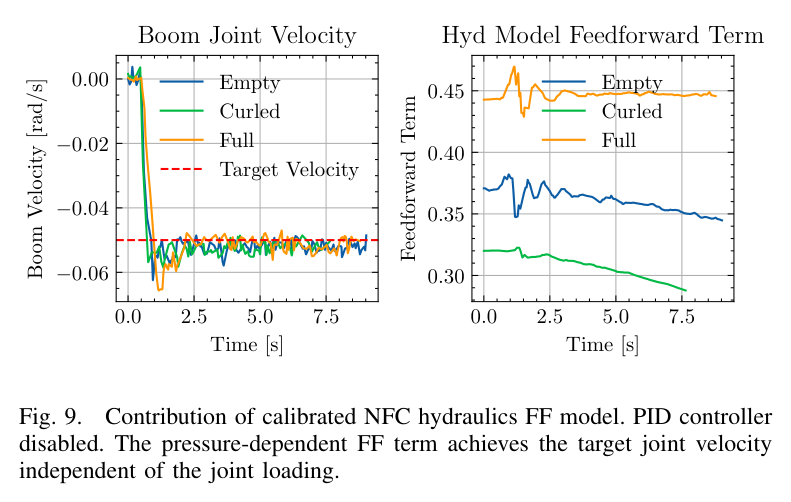
근거 B · 다진 흙 속에서 경로를 유지하는가
경로 추종 실험은 다진 흙에서 작업 깊이 2~40cm, 버킷 날 속도 약 0.5m/s로 수행했다. 제공 노트에 정리된 각 조건의 작업 횟수는 10회다.
경로 추종 RMSE
낮을수록 목표 경로에 가깝다 · 막대 공통 기준 5cm
| 기체 · 제어기 | RMSE | 최대 편차 | 관찰된 정지 양상 |
|---|---|---|---|
| CASE250 · 상용 | 4.7cm | 17cm | 최대 기능 압력보다 낮은 상태에서 조기 정지 |
| CASE250 · 제안 | 1.8cm | 5cm | 최대 기능 압력에 도달할 때 정지 |
| M445 · 제안 | 1.4cm | 4cm | 최대 기능 압력에 도달할 때 정지 |
CASE250의 상용 제어기는 단단한 흙에서 목표 깊이에 미치지 못했고, 약 5m 지점에서 일찍 멈췄다. 제안 제어기는 약 1m의 진입 구간 이후 목표를 유지했으며, 정지 시 스틱 압력은 최대 350bar에 도달했다.
같은 CASE250에서 RMSE 비율은 4.7 ÷ 1.8 ≈ 2.6이다. 이를 감소율로 표현하면 약 62%의 경로 오차 감소다. 이 결과는 해당 실험 조건의 비교이며, 모든 상용 시스템과 작업 조건에 대한 성능 보장은 아니다.
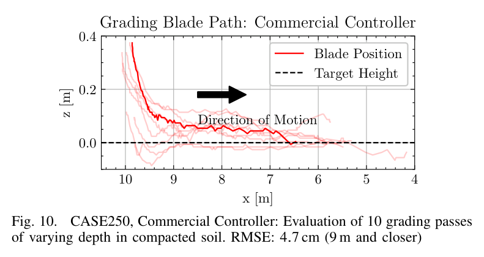
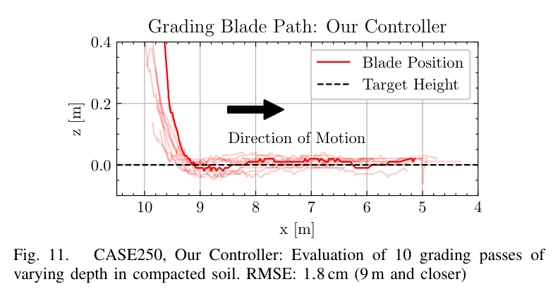
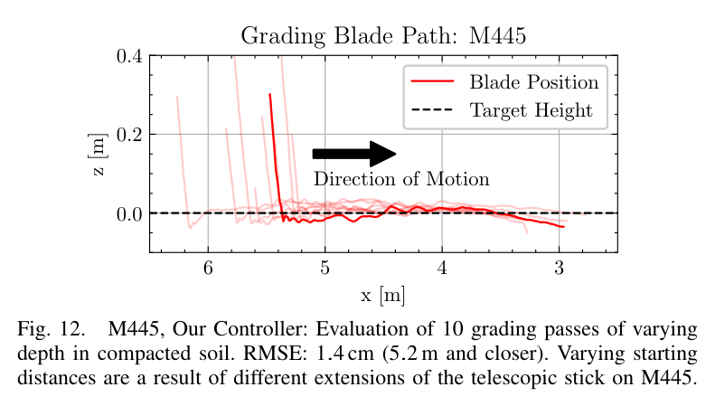
근거 C · 완성된 표면도 더 평탄한가
경로 데이터와 별개로, 깊이 25cm에서 5회 겹침 작업을 수행한 뒤 Leica MS60 레이저 스캐너로 표면을 측정했다. 상용 제어기는 중간 구간까지 목표 깊이에 못 미치고 10cm 이상의 높이 변동을 보인 반면, 제안 제어기의 표면은 더 평탄한 양상을 보였다.
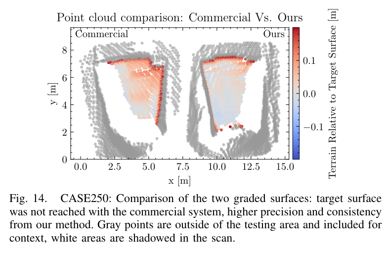
수치를 읽을 때의 기준
1.4·1.8cm는 흙 속 경로 추종 RMSE다. 레이저 스캔으로 얻은 최종 표면의 RMSE 수치는 제공 노트에 별도로 제시되지 않았다. 경로 추종 성능과 표면 품질 개선을 구분해 해석해야 한다.
LS는 부하를 따라가고,
NFC는 별도의 부하 보정이 필요하다
두 방식의 차이는 펌프가 무엇을 기준으로 반응하는지에 있다. 이 차이가 피드포워드 모델의 차원을 결정한다.
| 비교 축 | LS · 로드센싱 | NFC · 네거티브 플로 컨트롤 |
|---|---|---|
| 펌프 제어 | 밸브 전후 압력차를 일정하게 유지하도록 반응 | 중앙 바이패스 압력으로 제어 |
| 부하가 커지면 | 같은 명령의 유량을 상대적으로 잘 유지 | 같은 명령에서 기능 유량 감소 |
| 응답의 비유 | 부하에 대해 ‘뻣뻣함’ | 부하에 대해 ‘무름’ |
| 본 연구의 모델 | 명령–실린더 속도 1차원 표 | 원하는 유량·가상 배압에 따른 2차원 모델 |
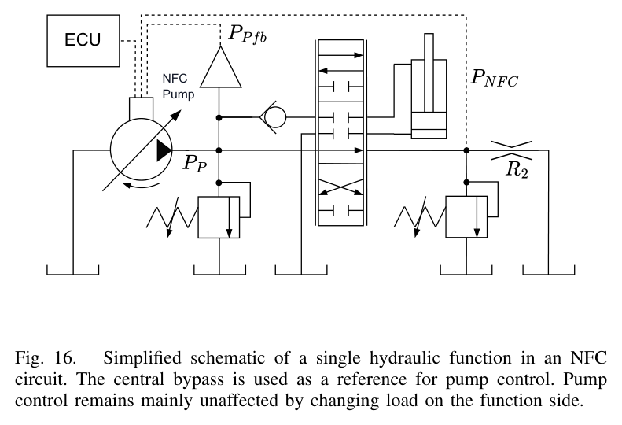
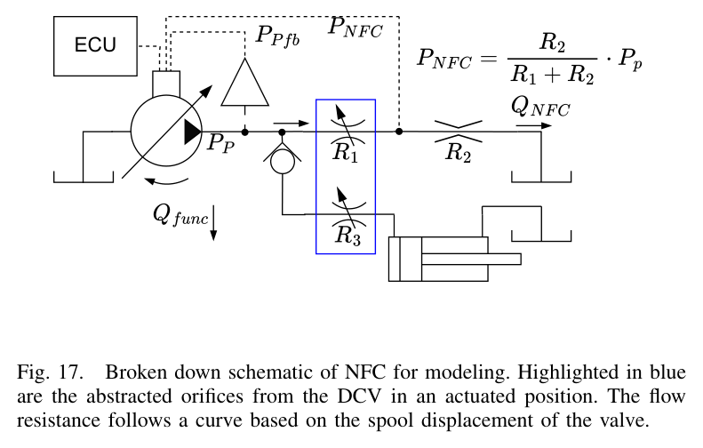
이 비교는 연구의 모델링 관점에서 단순화한 설명이다. 실제 유압계의 유량 분배와 회생 등은 피드포워드만으로 완전히 표현되지 않으며, 아래층 PID가 남은 영향을 보완한다.
HR35에 가져올 것은
수치보다 식별의 순서다
연구가 확인한 범위와 남은 과제
실차 검증은 LS와 NFC 두 방식에 한정된다. PFC, 즉 포지티브 플로 컨트롤 기체는 시험하지 못했다. 관절 간 결합도 모델에 포함하지 않았으므로 속도를 더 높일 때는 이 가정을 다시 검토해야 한다.
향후 과제로는 임의 형상 추종, 그리고 MPC 비용함수에 말단 힘을 포함하는 방법이 제시된다. 후자는 다짐이나 흙더미 재배치처럼 경로뿐 아니라 힘의 사용이 중요한 작업으로 확장하기 위한 방향이다.
여기부터는 HR35 적용에 대한 해석과 제안
아래 내용은 원 노트의 적용 의견을 정리한 것이다. 논문은 HR35에서의 이식 가능성, 보정 소요 시간, 정지 시험의 안전성을 검증하지 않았다. 특히 ‘20분 절차를 그대로 옮길 수 있다’는 생각은 실차 조건을 확인할 적용 가설로 다루는 편이 정확하다.
- 가장 먼저 펌프 제어 방식을 확정한다 실차 자료 요청의 첫 항목은 LS·NFC·PFC 여부다. 유압 방식이 정해져야 피드포워드 모델의 형태를 결정할 수 있다.
- 명령–속도 보정을 실차 계측 조건에 맞춰 설계한다 조이스틱 CAN 명령과 정상 속도를 대응시키는 시험은 트윈의 밸브 유량 이득을 대조할 후보가 된다. 논문의 명령 범위와 3초 측정 시점은 참고값이며, HR35의 명령 스케일·기구 변환·계측 성능에 맞는지 확인해야 한다.
- 관성 식별을 유압 피드포워드와 연결한다 NFC 방식이라면 압력에서 관성 성분을 제거하는 모델이 필요하다. 원 노트의 ‘축 A: 묶음 파라미터 식별’은 ‘축 B: 유압 피드포워드’를 뒷받침하는 작업으로 연결된다.
- 트윈과 실차를 같은 응답 지표로 비교한다 스텝 응답에서 얻는 K·ζ·ωn·τ를 공통 비교 지표로 삼는다. 한 번의 응답 적합을 출발점으로, 방향·자세·부하가 달라져도 모델이 유효한지 검증한다.
- MPC와 유압 보정의 역할을 나눈다 원 노트에서 언급한 서울대 MPC 작업과의 접점은 계층 분리다. 경로 추종기는 관절 응답을 예측하고, 아래층이 유압 방식과 부하 차이를 흡수하도록 인터페이스를 정리할 수 있다.
- 정지 시험은 조건을 정의한 실험 후보로 둔다 버킷을 지면에 밀어 서서히 멈추는 시험은 ‘축 G: 실험 설계’의 후보가 된다. 실제 수행 여부는 HR35의 압력 한계, 자세 안정성, 작업 범위와 정지 조건을 확인한 뒤 결정해야 한다.
다음 실차 검토에 가져갈 체크리스트
- 펌프 제어 방식과 관절별 유압 회로를 확인했는가?
- 압력·자세·속도 계측으로 필요한 힘과 실린더 속도를 계산할 수 있는가?
- CAN 명령의 스케일, 데드밴드, 방향별 응답을 확인했는가?
- 관성 보정과 부하 시험의 조건을 정의했는가?
- 경로 RMSE와 최종 표면 품질을 별도로 평가할 계획인가?
정밀한 궤적의 출발점은
기계가 부하에 반응하는 방식을 아는 것
이 연구의 설득력은 피드포워드와 MPC 사이의 역할 분담에 있다. 압력으로 현재 부하를 읽어 필요한 유량을 만들고, 그 위에서 관절의 지연을 예측한다. 두 층이 각자의 문제를 맡을 때 깊은 흙 속에서도 경로 오차를 줄일 수 있었다.
새로운 기체에 적용할 때 첫 질문도 분명해진다. 이 굴착기는 부하가 달라지면 유량을 어떻게 바꾸는가? 그 답이 모델의 형태와 다음 실험을 결정한다.
- 로드센싱
- 네거티브 플로 컨트롤
- 가상 배압
- 오리피스 저항
- 관성 보상
- 2차 시스템 + 데드타임
- 정지 시험
- MPC 경로 추종
출처와 해석 범위
- 대상 논문
- High Precision Hydraulic Excavator Control for Heavy-Duty Grading
Lennart Werner, Pol Eyschen, Sean Costello, Andrei Cramariuc, Marco Hutter.
ETH Zürich Robotic Systems Lab · Hexagon AB.
arXiv:2605.09465v1 [cs.RO] · 2026-05-10 · 프리프린트.
arXiv에서 논문 정보 보기 ↗ - 기사의 작성 근거
- 제공된 Obsidian 요약 노트와 첨부 그림을 바탕으로 재구성했다. 서지 정보, 식 번호, 실험 조건과 수치는 해당 노트 기준이며, 이 변환 과정에서 논문 원문을 별도로 대조하지 않았다. 프리프린트 정보만으로 동료 심사 완료 여부를 판단하지 않는다.
- 그림과 수치
- 그림은 제공된 로컬 이미지이며 원 노트의 번호를 유지했다. 13·15번은 제공 자산에 포함되지 않았다. 경로 RMSE 비교 막대는 노트 수치로 재작성했으며, 약 62% 감소는 (4.7 − 1.8) ÷ 4.7로 계산한 값이다.
- 기존 연구와 모델 참조
- Xu 2014, Dao 2021/2022, Yang 2022, Lee 2022 및 Werner 2025에 관한 설명은 제공 노트의 요약을 따른다. 전체 서지사항과 개별 연구의 평가 조건은 대상 논문의 참고문헌 확인이 필요하다.
- 적용 의견
- HR35, 디지털 트윈, 서울대 MPC 작업, 축 A·B·G와의 연결은 원 노트의 프로젝트 관점에 기반한 적용 제안이다. 논문의 실험 결과와 구분되며, HR35 성능이나 보정 시간에 대한 검증된 결론이 아니다.